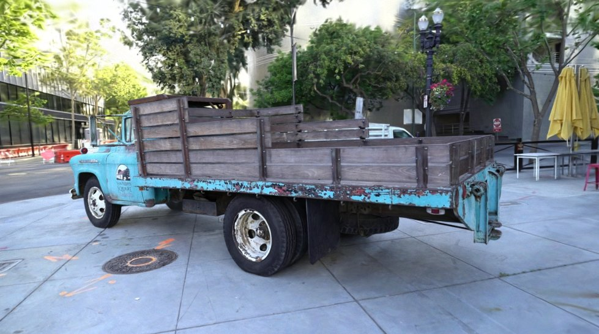
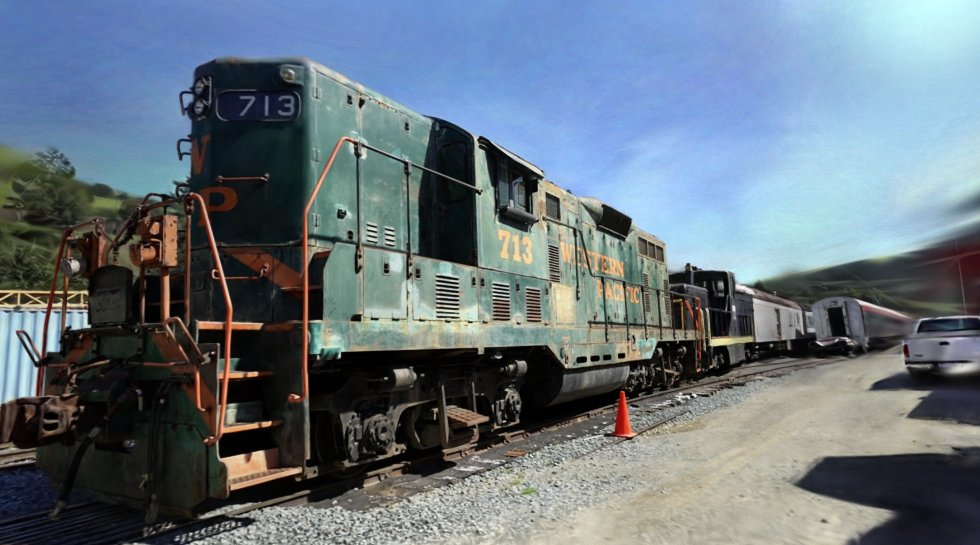
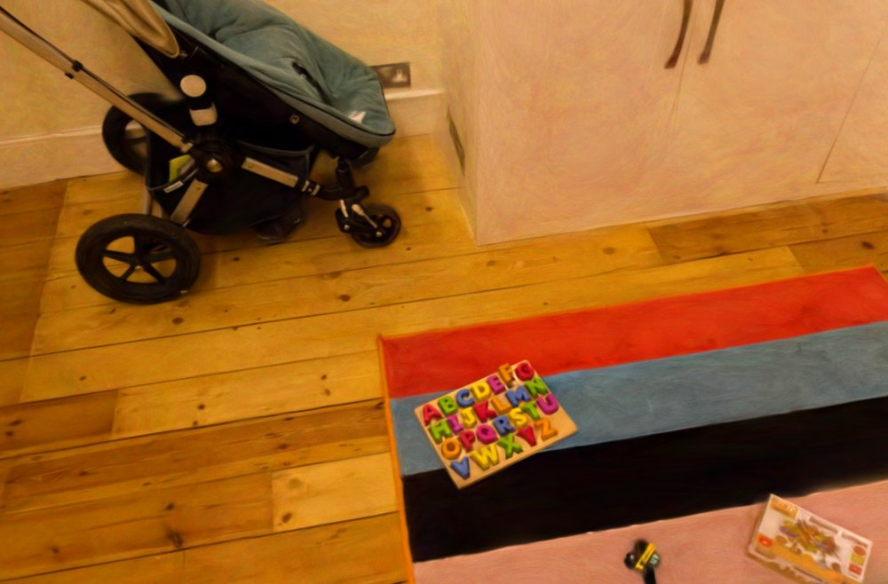
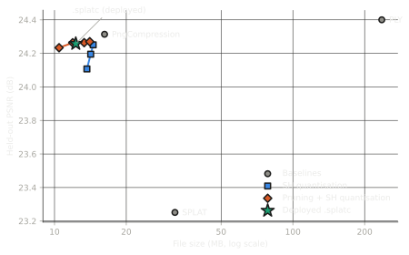
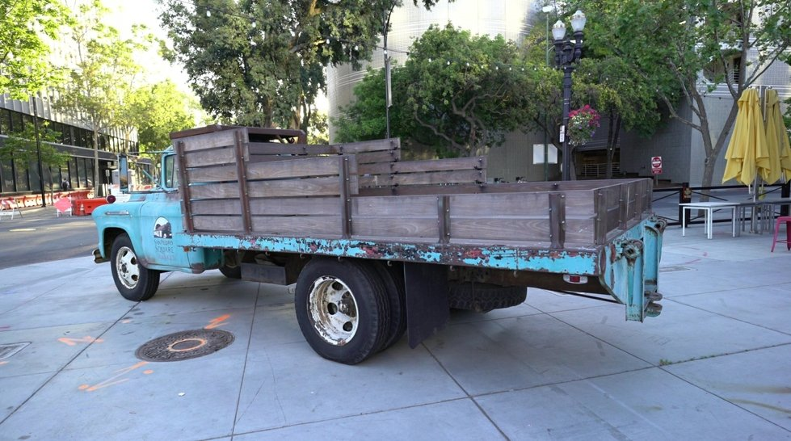
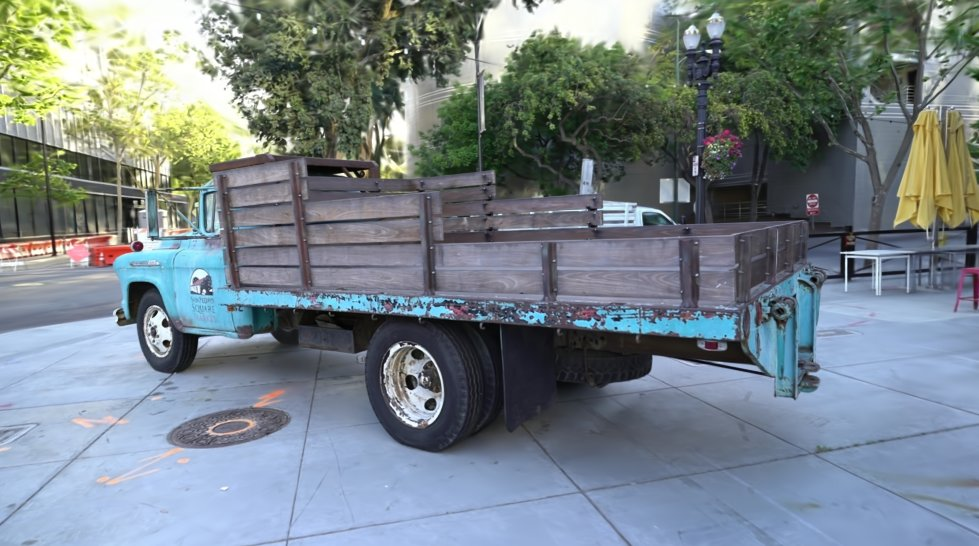
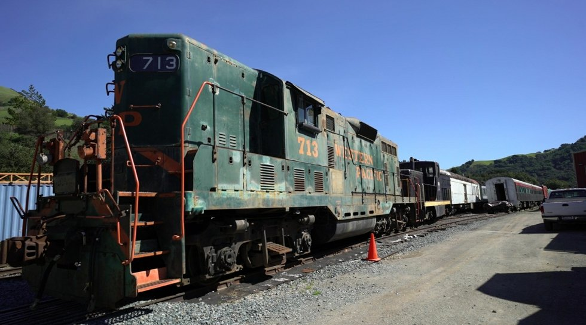
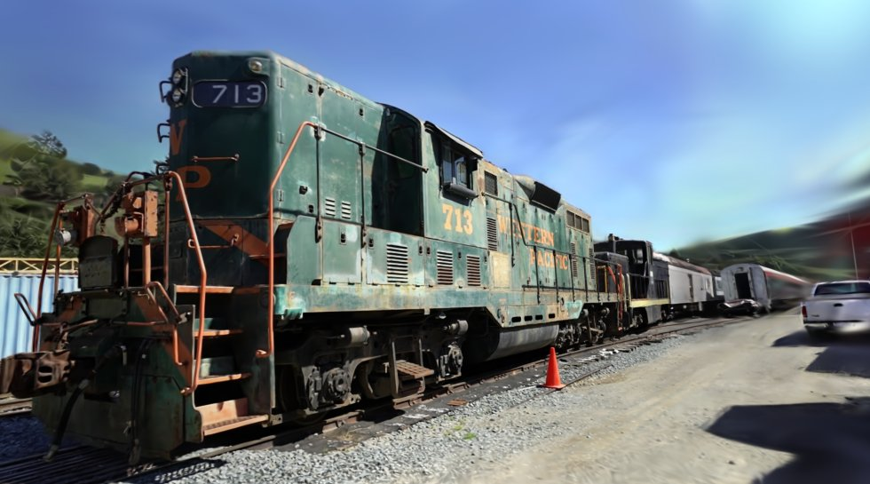
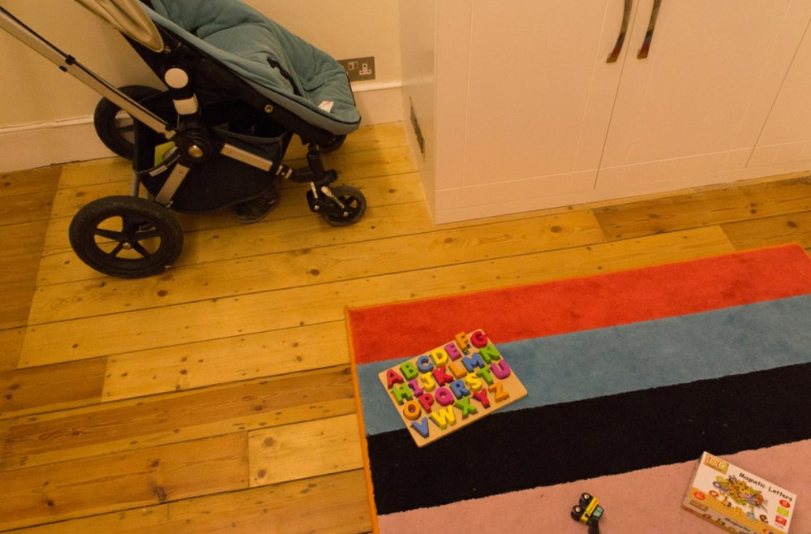
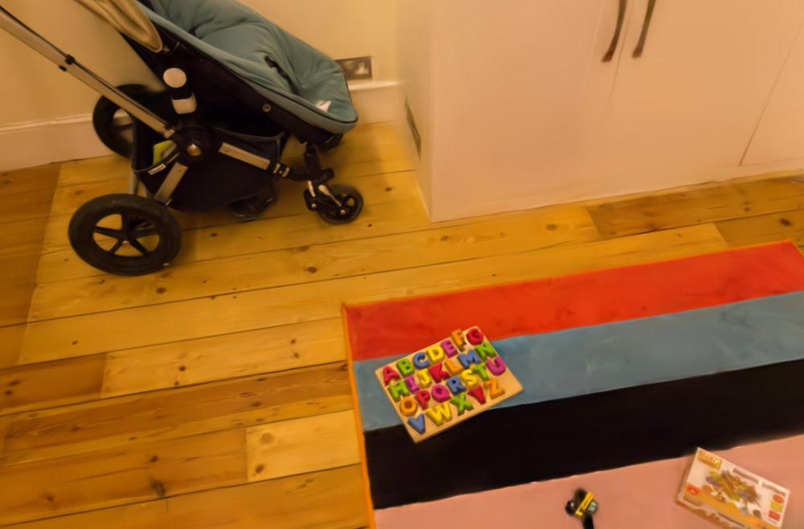

Compressing 3D Gaussian Splats for the Web
A trained 3D scene is 236 MB. This pipeline gets it to 12 MB, 19 times smaller, for a drop of under 0.2 dB in held-out PSNR, and renders it live in your browser.



Each scene downloads 10–12 MB. Drag to orbit, scroll or pinch to zoom, arrow keys to move. Needs WebGL2.
The problem
3D Gaussian splatting represents a scene as about a million semi-transparent, coloured 3D Gaussians fitted to photographs. It renders in real time and looks photographic, but each Gaussian stores 59 floats: position, scale, rotation, opacity, and 48 spherical-harmonic coefficients that make its colour change with viewing angle. That is 236 bytes per Gaussian and 236 MB per scene, and 76% of it is the view-dependent colour. Nobody waits for 236 MB to load a web page.
The pipeline
- Traingsplat with the MCMC strategy, capped at one million Gaussians.236 MB PLY
- PruneRank each Gaussian by how much it contributes to the training-view pixels; drop the lowest 20%.−20% of Gaussians, −0.009 dB
- Quantise colourReplace each Gaussian's 45 higher-order colour coefficients with an index into a 4,096-entry K-means codebook.The largest single saving
- PackPositions to 16 bits in log space, the rest to 8 bits, into one
.splatcfile: a block per attribute, each DEFLATE or PNG, Morton-ordered, checksummed.12.3 MB - RenderWebGL2: decode in a worker, exact depth sort, full degree-3 colour on the GPU.32–39 dB against gsplat
Results
| Scene | Raw PLY | .splatc | Ratio | PSNR change | Viewer vs gsplat | First frame, live |
|---|---|---|---|---|---|---|
| Truck | 236.0 MB | 12.3 MB | 19.22× | −0.142 dB | 36.0–36.9 dB | 2.1 s |
| Train | 236.0 MB | 12.3 MB | 19.14× | −0.191 dB | 37.6–39.4 dB | 1.2 s |
| Playroom | 198.2 MB | 10.3 MB | 19.33× | −0.004 dB | 31.8–34.4 dB | 1.0 s |
PSNR is measured on held-out photos the model never trained on (every eighth image). "Viewer vs gsplat" compares this site's renderer with the reference renderer on the same decoded scene. First frame is the median of five fresh loads of the live site; frames then run at the display's refresh rate (75 Hz on an RTX 4050 laptop).
Quality against size (Truck)

Side by side
A held-out photo, the reference renderer on the uncompressed scene, and this site's viewer on the 12 MB file. PSNR is against the photo, for this one view.
Truck


Train


Playroom


At this view the viewer scores about 2.5 dB below the reference renderer, and the white walls pick up a pink speckle. The reference renderer on the same 10.3 MB file matches the uncompressed score, so the gap comes from this site's viewer, not from compression; it is the colour shift listed under limitations.
What each stage contributes (Truck)
| Stage | Size | Ratio | PSNR |
|---|---|---|---|
| Raw PLY | 236.00 MB | 1.00× | 24.400 |
| PngCompression (existing baseline) | 16.21 MB | 14.56× | 24.314 |
| SH codebook, 4,096 entries | 14.53 MB | 16.25× | 24.251 |
| + 80% contribution pruning | 11.92 MB | 19.80× | 24.263 |
.splatc container (deployed) | 12.28 MB | 19.22× | 24.258 |
The middle rows use gsplat's PNG-based storage; the last row is the same scene in this project's single-file format, which the browser can stream.
What didn't work
- The container is 3% larger than the format it replaces.
- 12.28 MB against 11.92 MB for the same pruned, quantised scene in PNG-based storage. It buys one file, per-block checksums and a browser decoder, but the size gap is real. Per-attribute PNG grid layout is the likely cause and is not yet measured on its own.
- Contribution pruning did not beat plain opacity pruning.
- Ranking Gaussians by their summed blending weight over every training pixel was meant to beat ranking by opacity. At 80% kept, opacity matched or beat it on SSIM and LPIPS in all three scenes.
- Three bugs that only measurement found.
- Quantising positions on their raw range dropped Truck to 13.58 dB, because a few stray Gaussians stretched the range; a log transform fixed it. Culling Gaussians by their centre dropped one view to 26.7 dB; gsplat's bounding-box rules fixed it. Sorting depth into 16-bit buckets drew a stack of sky Gaussians out of order on Train (29.90 dB); an exact float radix sort fixed it.
Limitations and next steps
- The viewer's colours drift from gsplat's: up to 6.9 levels darker in Playroom's blue channel, and a pink speckle on Playroom's white surfaces. The cause is not yet found.
- Very large Gaussians are clamped at 1024 pixels on screen.
- Going from phone photos of your own room to a compressed scene in one command is the next step; the scenes here come from public datasets.